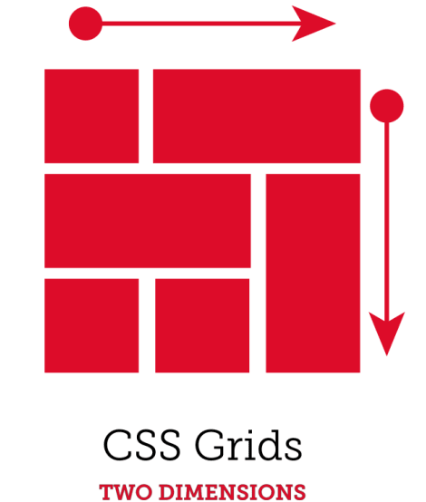
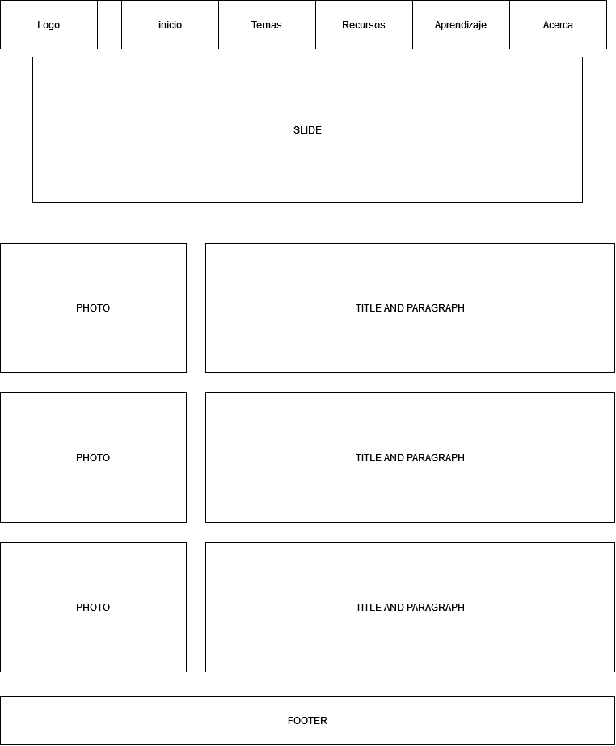

¿Cuál es mi función?
el proposito de este sitio web es una solución consecuente tras la pandemia
del COVID-19, la educación virtual ha venido a suplir la necesidad de la
presencialidad, siendo usado por todas las instituciones educativas, esto
ha traído como resultado la necesidad de elaborar recursos educativos
digitales para dinamizar las estrategias de aprendizaje. Una estrategia
la constituyen los Objetos virtuales de aprendizaje.
Estos recursos son desarrollados por empresas que diseñan contenidos
multimediales e interactivos, basados en HTML5, CSS3 entre otras tecnologías,
aplicandolos en los contextos academicos, personales y profesionales.
Tema 1
Las etiquetas semanticas son aquellos caracteres o comandos especiales
los cuales sirven para determinar una función en el lenguage de
programación, a ellas se les atribuye los conceptos primarios con los
que se va a trabajar el codigo, en este caso el de un sitio web con la
finalidad de que la interfaz sea más amigable con el usuario, facilitando
y optimizando las tareas que se requieran para la construcción del mismo.

Tema 2
La herramienta CCs Grid permite al usuario administrar los recursos de un
sitio web, de manera que este se pueda visualizar de una manera más
organizada referente a una cudricula y la distribución dentro de ella,
manejando estilos de diseño llamativos con los cuales poder atraer al
cliente.

Mockup
